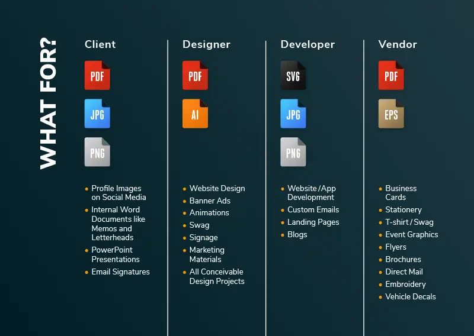

Chapter 4: Data formats Lesson
Computer and computer-based devices process and store all forms of data in binary format. While in Human communication includes language, images and sounds.
Data formats is the specifiacations for converting sata into conputer-usable form
The main points in this chapter includes:
- Common Data Representations
- ASCII
- Data Representation
- Memory
- Visual Data
- Bitmap Images
- Bitmap Display
- GIF (Graphics Interchange Format)
- PNG (Portable Network Graphics)
- JPEG (Joint Photographers Expert Group)
- Object Images
- PostScript
- Bitmap vs. Object Images
- Video Images
- Audio Data
- Waveform Audio
- Sampling Rate
- Audio Formats
- Audio Data Formats
- Data Compression
- Page Description Languages
- Internal Computer Data Format
- 5 Simple Data Types
After finished this chapter you will learn more about file formats, the specifiacations of
each data formats and when or where use each data types.